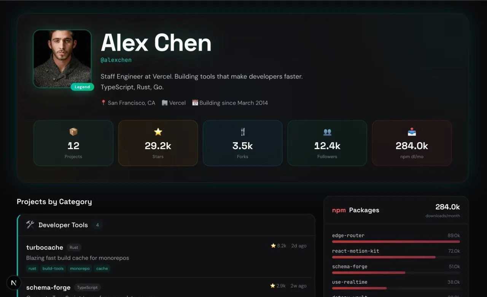

GitShow turns GitHub profiles into project portfolios
Originally posted on LinkedIn, February 26, 2026.
I built GitShow, an open-source tool that gives GitHub profiles a better visual presentation. Replace github.com with gitshow.dev in any profile URL. For example, github.com/ofershap becomes gitshow.dev/ofershap.
GitShow adds features GitHub does not provide:
- npm download statistics across all your packages
- Projects automatically grouped by category, including MCP Servers, CLI tools, React and UI, DevOps, and more
- Visualizations of your stack, focus areas, and project creation timeline
- One-click sharing buttons
GitHub shows a flat list of repositories. GitShow tells the story of what you are actually building.
It works for both personal profiles and organizations. gitshow.dev/sindresorhus shows 90 projects and 43B npm downloads/month for sindresorhus. gitshow.dev/vercel shows that it works for organizations too. The torvalds profile has 6 repos and 225k stars, while gitshow.dev/wesbos shows 478k npm downloads/month.
The source code is open.
